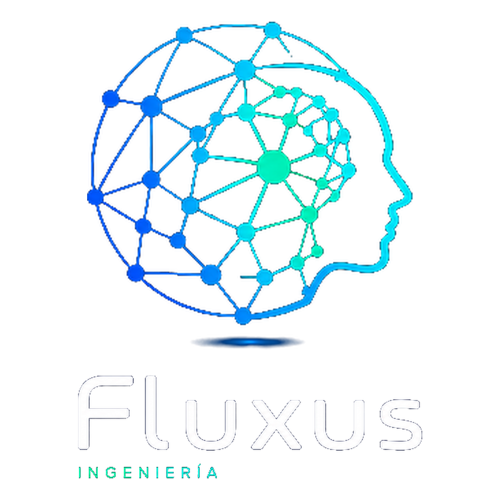

Ingeniería de transporte · Analítica de movilidad
Del flujo al dato, del dato a la inteligencia, de la inteligencia a la decisión.
Convertimos el flujo real —de personas, vehículos y carga— en información para decidir mejor. Dato propio con tecnologIA, microdato público e ingeniería senior.
Transporte público en vivo
Demanda, ocupación y evasión a bordo con cámaras e IA.
Evaluación de infraestructura
Análisis social y privado de proyectos de transporte.
Localización óptima
Dónde conviene invertir, con microdato y modelación.
Estudios de demanda logística
Proyección de demanda de carga portuaria, trazable a su fuente.
Productos · en terreno
Lo que medimos, donde ocurre
Demanda y evasión a bordo
Medición a bordo con cámaras e IA: sube/baja por parada y evasión.
Eficiencia de terminales
ANPR: tiempos, ocupación y rotación de andenes.
Acceso portuario
Gestión de acceso y turnos de camiones con ANPR; el costo de la espera, cuantificado.
Afluencia en recintos
Visitantes por hora, flujos peatonales y zonas calientes.
Estudios de demanda e IMIV
Demanda, localización e Informe de Mitigación de Impacto Vial.
Logística y comercio exterior
Proyección de demanda de carga portuaria, trazable a su fuente.
Por qué Fluxus
Lo que casi nadie puede ofrecer a la vez
Nuestro diferencial no es “usar datos”. Es reunir cuatro capacidades que rara vez van juntas —y hacerlas trabajar como una.
Dato propio
Levantamos el dato donde no existe, con cámaras con IA y lectura de patentes (ANPR) y sensores en terreno.
Microdato público
Fusionamos fuentes que ya existen pero pocos saben explotar: SII, censo, aduana, patentes municipales.
Ingeniería senior
Trayectoria en planificación, modelación y evaluación de proyectos que da rigor y sentido al dato.
Analítica e insight
Traducimos el dato en reportes claros, en lenguaje simple y con acompañamiento experto, para que se vuelva decisión —no tableros que se archivan.
El método
Del dato a la decisión
Dato
microdato + big data
Tecnología
cámara binocular IA · sensores
Analítica
modelación e inteligencia
Decisión
mejor fundada
La analítica de datos es el motor común a toda nuestra oferta.
Productos
Dos planos, según cómo lo necesita
El plano ① abre la puerta con medición tangible y recurrente; el plano ② entrega los estudios de alto valor. Haga clic en cada producto para conocerlo en detalle.
① Eficiencia en vivo · medición propia, recurrenteDemanda y evasión a bordo
Demanda, sube/baja por parada y evasión, en vivo.
Ver detalle →Eficiencia de terminales
ANPR: tiempos, ocupación y rotación de andenes.
Ver detalle →Acceso portuario
Gestión de acceso y turnos de camiones con ANPR; medimos y reducimos el costo de la espera.
Ver detalle →Afluencia en recintos
Visitantes por hora, flujos y zonas calientes.
Ver detalle →Estudios de demanda e IMIV
Demanda, localización e Impacto Vial.
Ver detalle →Evaluación de infraestructura
Modelación y evaluación social de proyectos.
Ver detalle →Logística y comercio exterior
Proyección de demanda de carga portuaria, trazable a su fuente.
Ver detalle →Análisis urbano y territorial
Crecimiento urbano y económico con microdato.
Ver detalle →Entrega y acompañamiento
No es solo el dato: es lo que hacemos con él
Cada proyecto termina en algo accionable. Traducimos la medición en reportes claros, acompañamos la decisión con asesoría técnica y ponemos el dato en su contexto —respaldados por una trayectoria real en planificación, regulación y evaluación de proyectos de transporte.
Reportes claros
Entregables que traducen la medición en conclusiones accionables, no tableros que se archivan.
Asesoría técnica
Acompañamiento experto en cada etapa: del diseño del levantamiento a la interpretación y la recomendación.
Información para decidir
El dato puesto en contexto de decisión, con el criterio de quienes han estado al otro lado de la mesa, en el sector público y privado.
Quiénes somos
Ingeniería con sello de sector
Fluxus nace para convertir el flujo en decisiones, apoyada en una trayectoria real en planificación, regulación y evaluación de proyectos de transporte en Chile.

Rodrigo Medina González
Ingeniero Civil y ex Director Nacional de SECTRA. Conducción técnica de estudios de transporte, planificación de infraestructura y red institucional con el sector público.

Rodrigo Valladares Marchant
Abogado con experiencia en la institucionalidad del transporte —validación de IMIV y regulación de servicios— y en la articulación público-privada.
Contacto
¿Conversamos sobre su proyecto?
Concepción, Chile
Sector público, concesiones e infraestructura, retail.
Le contactamos por correo tras recibir su consulta.